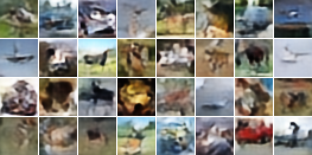
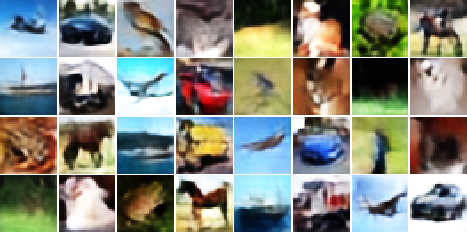

学习先验（拓展）
潜空间扩散模型从随机噪声出发，经过 60 步 DDIM 生成一份 8 × 8 × 4 潜变量，再由题五的 VAE 解码成彩色图像。
固定种子对照
第一组为 CIFAR-10 测试集的前 32 张照片。两组生成图共享种子 2026 和初始噪声，各展示连续 32 张。真实照片仅供整体外观对照。



指定类别按飞机、汽车、鸟、猫、鹿、狗、蛙、马、船、卡车循环，从左到右换行。独立分类器在真实测试集认对 92.60%；两批各 1,000 张的指定类别样本中，分别有 807 张和 790 张与目标一致。
在浏览器中生成一张
选定类别时，整条轨迹使用同一目标，引导强度为 6。固定网格由实验端生成，网页种子可复现本机抽样。
首次生成会加载模型，之后在当前浏览器内推理。